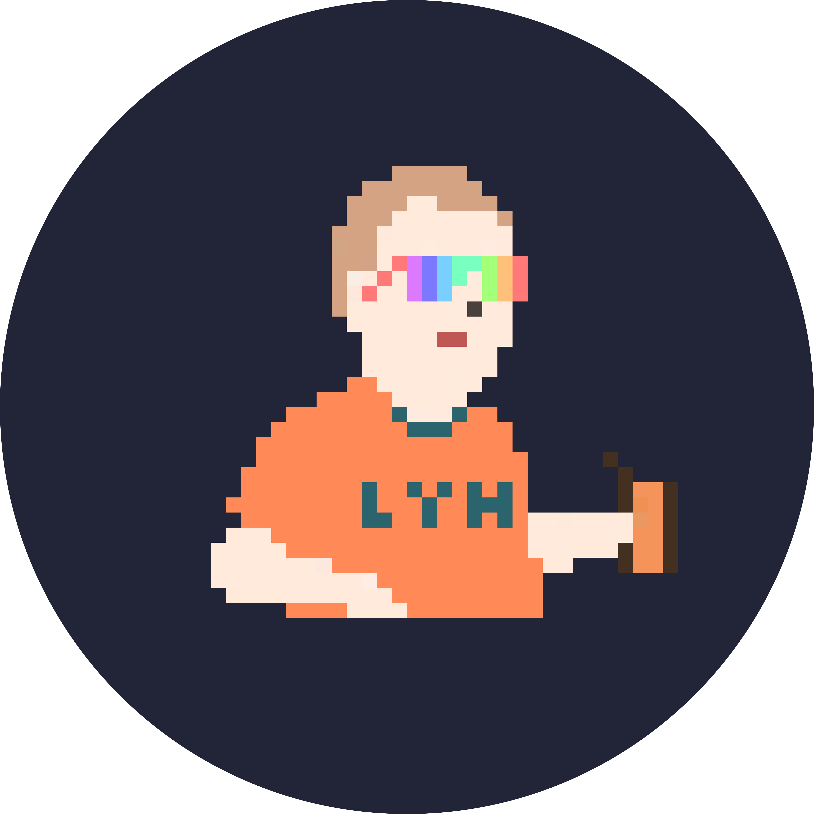

About me

💭想成为UX的UI设计师、摩托车驾驶员、新奇数字产品爱好者等。
📝 个人信息
我是李宇航，4年互联网产品设计经验
喜欢新奇的互联网产品，B端&C端均有涉猎
对工具类产品保持着很高的兴趣。目前居住在北京。
⏳ 工作时间线
2022.05—至今 北京百易图信息科技有限公司｜产品部｜UI 设计师
2021.04—2022.03 龙湖集团｜DXC设计部 ｜UI 设计师
2019.08-2021.02 北京智己科技有限公司｜产品部｜设计师
📲 联系方式
邮箱📮：13731201902@163.com
手机📱：15210445725